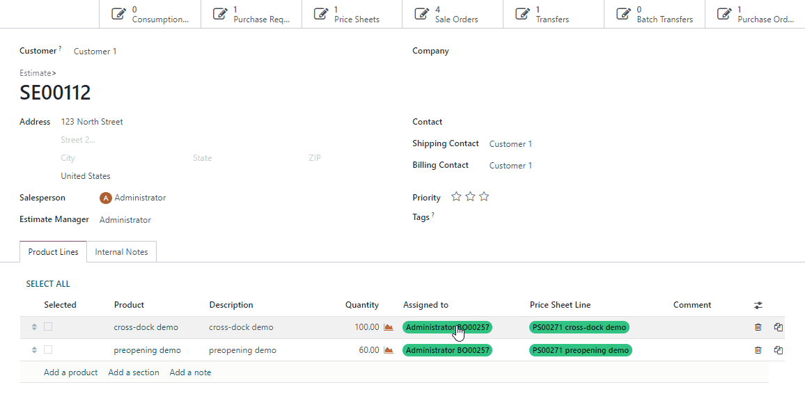

<link href="https://fonts.googleapis.com/css2?family=Open+Sans:ital,wght@0,300;0,400;0,500;0,600;0,700;0,800;1,300;1,400;1,500;1,600;1,700;1,800&amp;display=swap"
      rel="stylesheet"></link>
<section class="py-3">
    <div class="container" style="font-family: 'Open Sans', sans-serif;">
        <div class="p-5 bg-white"
             style="border-radius: 10px; box-shadow: -40px 40px 160px 0 rgb(0 0 0 / 8%), -8px 8px 15px 0 rgb(120 120 120 / 4%), 3px 3px 30px 0 rgb(0 0 0 / 4%) !important;">
            <h1 class="text-center" style="font-size: 48px;">
                2Many Clickable Tag
            </h1>
            <h2 class="text-center"
                style="font-size: 20px; font-weight: 400;">
                Allows you to open a form of the related record in one click through the One2Many and Many2Many widget.
            </h2>
            <div class="mt-4">
                
            </div>
        </div>

        <div class="mt-3 bg-white"
             style="font-family: 'Open Sans', sans-serif; border-radius: 10px; box-shadow: -40px 40px 160px 0 rgb(0 0 0 / 8%), -8px 8px 15px 0 rgb(120 120 120 / 4%), 3px 3px 30px 0 rgb(0 0 0 / 4%) !important;">
            <div class="pt-2">
                <ul class="nav nav-tabs justify-content-center bg-white pt-md-2"
                    role="tablist" style="border-bottom:1px solid #CFCFCF">
                    <li class="nav-item">
                        <a aria-controls="overview" aria-selected="true" class="nav-link active"
                           data-toggle="tab" href="#overview" id="overview-tab" role="tab"
                           style="font-size:14px">
                            Overview
                        </a>
                    </li>
                    <li class="nav-item">
                        <a aria-controls="releases" aria-selected="false" class="nav-link"
                           data-toggle="tab" href="#releases" id="releases-tab" role="tab"
                           style="font-size:14px">Releases
                        </a>
                    </li>
                </ul>
            </div>
            <div class="tab-content p-4">
                <div aria-labelledby="overview-tab" class="tab-pane fade active show" id="overview" role="tabpanel">
                    <div class="d-flex align-items-center flex-column flex-column-reverse flex-xl-row p-4 mb-4"
                         style="background-color: #f3f5f7; border-radius: 10px;">
                        <div class="d-flex align-items-center justify-content-center mx-0 mx-xl-4 mb-2 mb-xl-0"
                             style="flex: 1; font-weight: 500;">
                            <ul>
                                <li>
                                    The 2Many_clickable_tag module provides an easy way to access the tag record form view.
                                    <br>You no longer have to memorize the tag name, navigate to the list view and search for it.
                                    <br>Simply click on the tag, and you will be taken directly to the form view.
                                </li>
                                <li>
                                    In addition,  the 2Many_clickable_tag module retains the original  possibility of the color selection, which requires the Shift button to be pressed while clicking.
                                </li>
                                <li>
                                    No additional configurations needed. All you need to do is install the module and use widget="many2many_tags" in your XML.
                                </li>
                                <li>
                                    Works with community and enterprise editions. Built on the basis of Odoo OWL technology.
                                </li>
                            </ul>
                        </div>
                    </div>
                </div>
                <div aria-labelledby="releases-tab" class="tab-pane fade" id="releases" role="tabpanel">
                    <div class="px-2">
                        <div class="row">
                            <div class="col-lg-3">
                                <div style="font-weight: 500;">Release 1.0.0</div>
                                <div style="font-weight: 300;">14th December, 2022</div>
                            </div>
                            <div class="col-lg-9" style="color: #525c66;">
                                <ul>
                                    <li>
                                        One2many,  Many2many fields.
                                    </li>
                                    <li>
                                        Original possibility of the color selection with Shift +click.
                                    </li>
                                    <li>
                                        Extend standard "many2many_tags" widget with Odoo OWL technology.
                                    </li>
                                </ul>
                            </div>
                        </div>
                    </div>
                </div>
            </div>
        </div>
    </div>
</section>